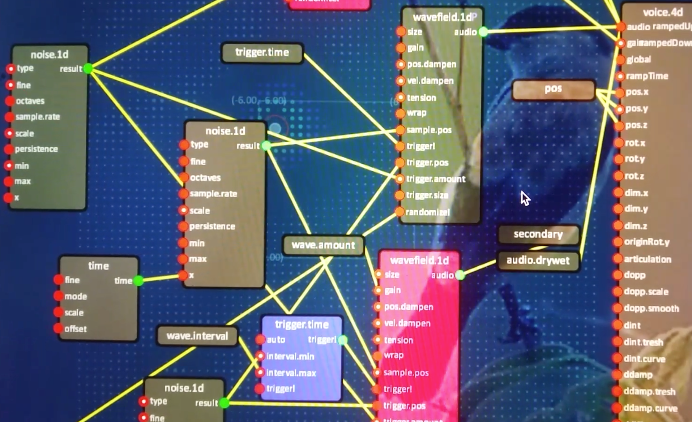
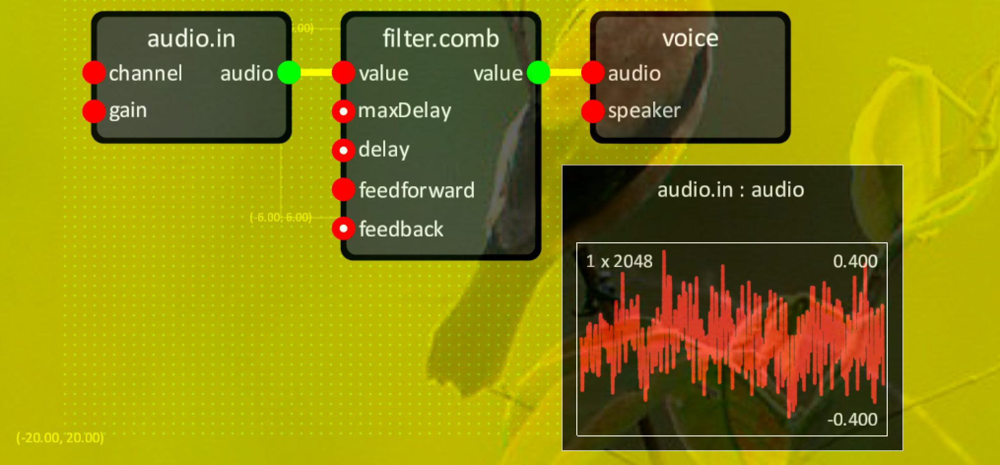

Audio Graph
'Audio Graph' is an implementation of a node-based system for making synthesized sound. It includes the AudioGraph data structure and many AudioNode type implementations. It comes with a real-time editing interface for use with 'AV Graph'. Together, the AV Graph editor and Audio Graph create a real-time synthesis environment for sound. Audio Graph is the result of a personal on-going process of explorations and collaborations with media artists and a desire to create a powerful tool for creative coders for use in their practice. A primary focus for Audio Graph and the AV Graph project in general is to let coders harness the power of the data flow paradigm directly from within their apps. As such, Audio Graph is designed in a way that the coder has full control over when and how graphs are used and instanced.
Voices
For outputting sound, Audio Graph comes along with a 'voice manager' and a 'voice' node. It's the voice manager's responsibility to allocate voices from a limited pool of channels and to mix sounds across channels. On a typical stereo setup, the number of channels is fixed at two. Audio Graph however allows any type of channel and speaker configuration. Voices can be output as mono, mapped to all speakers, output to a specific channel, or dynamically allocated from any of the available channels. The voice manager respects the voice node's wish to be output to the left or right (named) channel, to output to all channels, or to be output on a specific channel. This ability makes it possible to render sound as mono, stereo, or a custom setup for multi-speaker installations.
Audio Graph was used at 4DSOUND to create a spatial sound design where individual sound objects moved through space, emitting sounds which were spatialized and mapped to speakers on the 4DSOUND system's speaker grid.
Nodes and sockets
Audio Graph defines a number of basic node types and a limited number of DSP and instrument nodes. Audio Graph is designed in such a way it's easy to add new nodes and make them work efficiently. Since audio synthesis usually happens in a real-time context, the system is designed to prevent run-time memory allocations, and to prefer optimized 'scalar' (control rate) type operations when possible. Audio Graph includes real-time visualisation of the synthesized PCM wave forms and statistics telling you how much of your CPU-budget is spent processing each node. Additional nodes exist to interface with C++. Nodes such as mems and memf allow one to push strings and floating point values to the graph.

In addition to the various node types, Audio Graph defines a few types which can be used to connect input to output sockets. These types are:
- float
- audioFloat
- trigger
- any
The float type pretty much speaks for itself. The trigger type is used to connect a node generating events to nodes reacting to events. The audioFloat type is used for floating point data, which could either be output at control rate (scalar audio float) or sample rate (vector audio float). Internally, audio nodes are optimized to recognize scalar audio floats and to perform optimized calculations where possible. The any type basically allows any type of input or output to connect to the socket.
Audio Floats
Different from control rate (kr) and audio rate (ar) found typically in audio synthesis software.

Common node types
Math and numbers
math
Oscillators
osc
Logic
logic.switch
Audio input and output
DSP and instruments
filter.comb wavefield.1d wavefield.2d
Creating your own nodes
AudioNodeBase AUDIO_NODE_TYPE AUDIO_ENUM_TYPE
Speed considerations